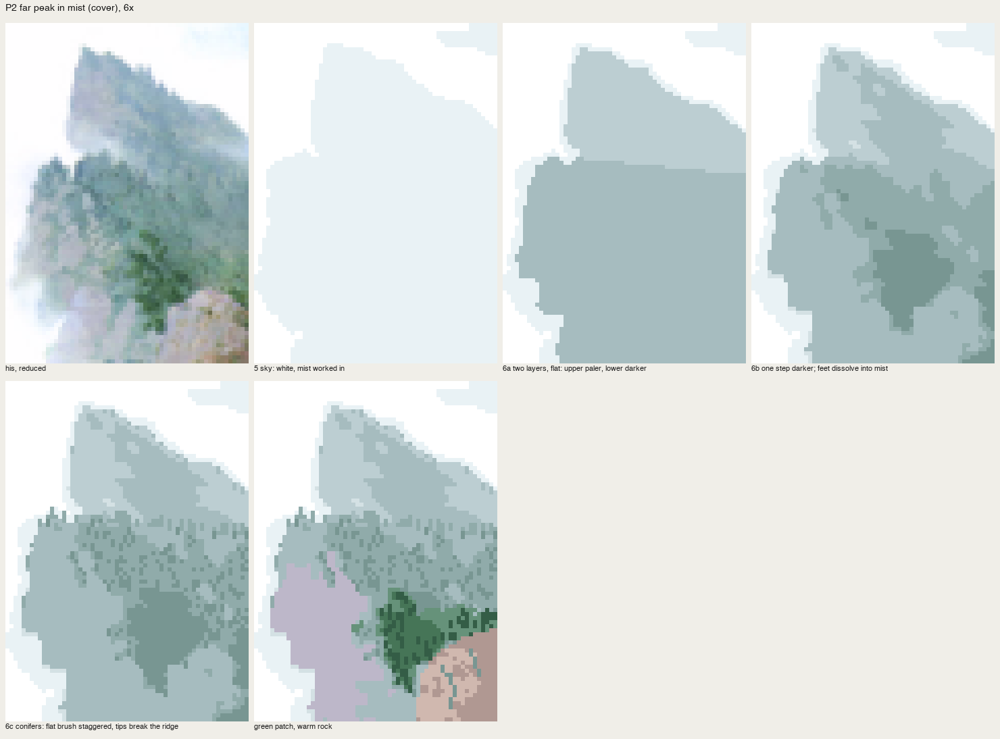
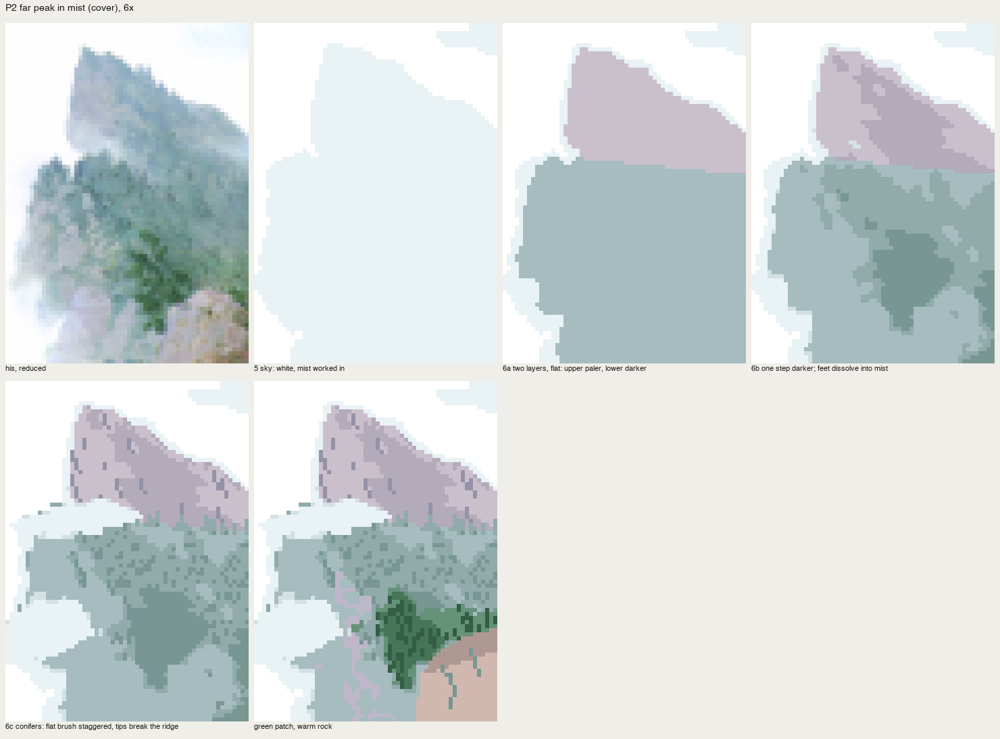
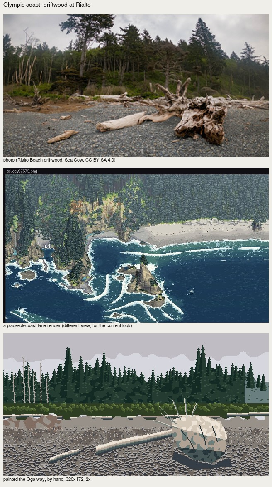

Conifers and far ridges: the staggered brush
Front page: the tutorial. Code: copies/p2_peak.py, src/vocab.py stagger, spire, places/olycoast.py.
What the book shows
The cover's step 6 (p.8): the far peak is painted into the wet sky with the sky's own colours, and its conifers are made by "the flat brush shifted vertically in a staggered way", then one step darker is layered for the shading. The finished cover has two layers of mountain with a tongue of mist between them. The upper one is paler and bluer (aerial perspective, p.54), and each layer's foot dissolves into mist.

nb216. His far peak, reduced to 60×84, at 8×.
P2, by stage
- Sky: white everywhere, mist worked in where he isn't pure white.
- Two layers, flat. The upper peak is a low-chroma blue-violet grey; the lower ridge is the mist's grey-green, one step darker.
- One step darker inside each layer, following his organised values. Then the feet dissolve: toward the mist, pixels lift to the palest grey and to mist, with a smooth noise making tongues.
- Conifers: staggered dashes.
- Mist lobes across the mountain, a green patch, a warm rock.
# 6c: along the lower ridge top, tips break upward, in groups; inside, short vertical dashes one step darker
for x in range(W):
if (x // int(3 + (x * 7) % 4)) % 2 == 0:
for k in range(r.integers(1, 5)):
cv.put(x, top[x] - k, I['g3'])
# the crag: 1-px dark strokes down the fall line
for i in range(26):
...
for k in range(L0):
cv.put(x + (k // 3), y + k, I['u3'])
# mist lobes cutting ACROSS the mountain
for poly in ([(0, 36), (10, 31), (24, 29), (34, 33), (26, 37), (10, 39)], [(0, 58), (8, 52), (18, 54), (22, 62), (12, 68), (0, 70)]):
lobe = cv.mask_poly(poly)
cv.mass(lobe, I['g0'], wet=1.4)
...
The traps, from the critic
- The comb. Conifer ticks at every column read as a comb. The fix is irregular groups with gaps (
vocab.staggertakesgroup=(2,6), gap=(1,4)). - Mist only as a frame. In his painting the mist cuts across the mountain in bands; in my v1 it only surrounded it.
- The hard coloured slab. Asked for a coloured grey, I laid a lavender block with a straight edge:

nb220. A lavender slab at lower left, and a stippled rock.
- Too much colour. My first mauve for the upper peak was far too saturated. The right colour is a blue-violet grey at chroma about 0.015. His greys are the mist's greys.

nb231. The mauve peak, overdone.

fig. His | mine, 6×. The fall-line striation still reads a little like rain.
The spire: conifers nearer than the far ridge
When conifers are big enough to be individuals (6–40 px tall), the staggered brush becomes a tree. My first spire drew regular tiers of equal width, cartoon Christmas trees:

nb263. The coast forest with the first spire.
The rebuilt spire is still the cover's staggered brush, one tree at a time:
- a 1-px leader;
- branch tiers at irregular 2–4 row intervals;
- each tier a short dash of random length on each side, with drooping ends;
- the lit end on the sun side (or on top when overcast);
- the core filled near the trunk so it reads as a mass, not a ladder.
def spire(cv, x, yb, h, ix, body='c_mid', dark='c_dark', lit='c_lit', sun=+1, w=None, seed=0, where=None):
...
for yy in range(top, int(yb) + 1): # leader
cv_put(x, yy, ix[body])
y = top + int(r.integers(1, 3))
while y <= yb:
t = (y - top) / max(h, 1)
for side in (-1, 1):
n = int(round(w * t * r.uniform(0.6, 1.35) + 0.5))
for k in range(1, n + 1):
droop = 1 if k > 0.6 * n and n >= 3 else 0
idx = ix[dark] if (side * (sun or 1) < 0 and sun != 0) else ix[body]
if k == n and (side == sun or sun == 0):
idx = ix[lit]
cv_put(x + side * k, y + droop, idx)
...
y += int(r.integers(2, 4)) # irregular tier spacing
for yy in range(top + 2, int(yb)): # fill the core
...

fig. Spruce against an overcast sky on the Olympic coast, 5×. Tall spires where the photo has the big trees, bleached snags on the left, one fleck of sky-light on tier tops.
A stand of conifers
For a forest seen whole (the foot of the Index wall, the coast wall), don't draw every tree:
- lay the stand as an organised notan (hole, dark, mid) from the form source;
- put spires along the top edge, so tips break the sky or the wall;
- add a few more where a crown top is lit;
- give the interior tier-top flecks and nothing else.
That's the book's crowd principle again: "don't draw everything in a crowd."